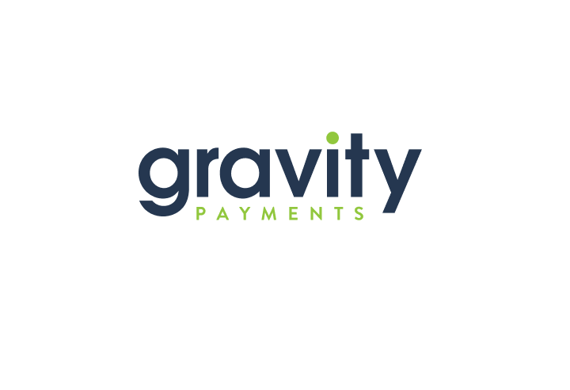
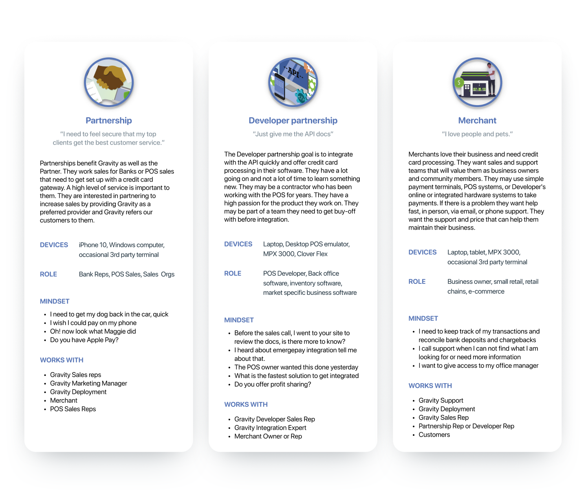
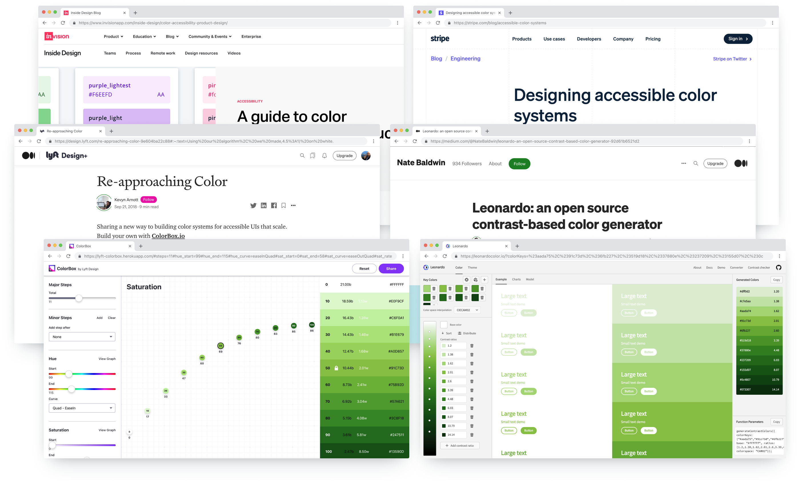
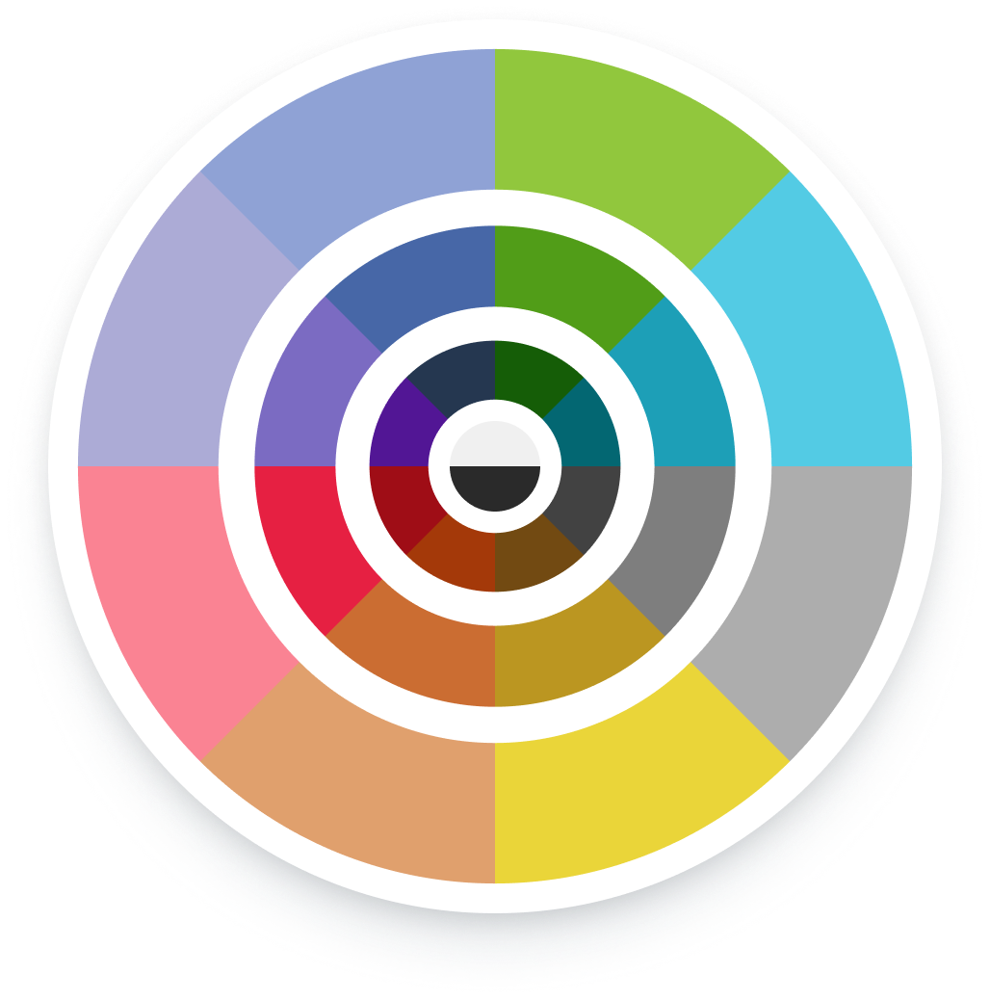
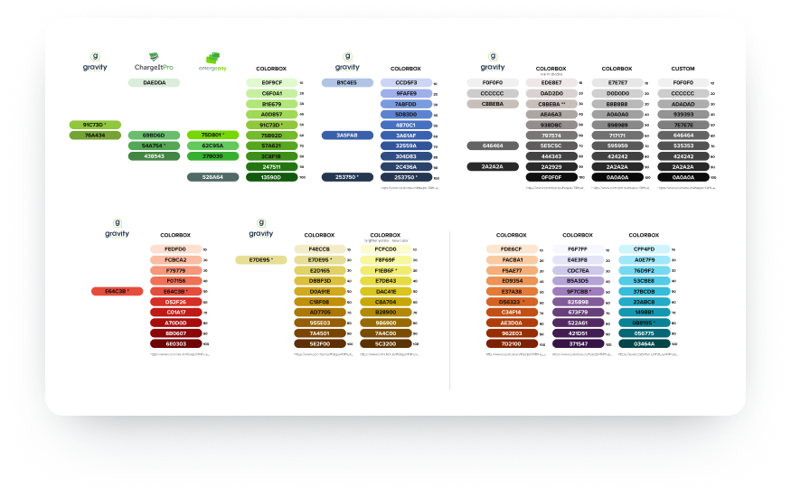

With accessibility top of mind and using insights from leading experts, Marketing and Product teams collaborate to bring Gravity Payments and ChargeIt Pro under one brand while laying the foundation for a combined design system.
In 2017, Gravity Payments CEO Dan Price acquired the Boise credit card processing software company ChargeIt Pro. There were no plans to combine the companies, opting to work as sister organizations. By 2019, it was apparent that both teams would function better as one, and our customers and users would benefit from the combined relationship of one organization.
Transition plans were made and rollout discussions started. Marketing and Product worked together to bring materials, websites, and applications into one brand.
What are the problems we can address while we redefine the brand for our customers? After years of quick-paced guerrilla marketing tactics and campaign variations, the sales materials are in disarray. A repository of assets has been difficult to keep updated organically. We needed an integrated and easy-to-update system to store information that can be shared across the organization.
All of Gravity's applications and integrations are branded as ChargeIt Pro. Color, theme, and logos need to be updated throughout. Gravity's primary brand colors are not user-accessible when used for UI elements such as buttons. Gravity needs a broader color palette that could be used across websites, applications, and marketing materials.
Through previous user interviews and reflecting on our market data, we know that a majority of partners and merchants ages are between 35–65. Without specific data on visual acuity, we inferred that we should focus on visual accessibility as a standard. Gravity and CIP have used "Partners" to define different audiences. Working with Sales teams we defined 2 groups: Partnerships and Developers — allowing us to speak to their unique and specific needs.
As Gravity and CIP are becoming one by name and visual style, the case for standardization is easy to make. Our users need the accessibility that a modern Accessible Color System (ACS — a color palette that includes swatches with contrasts that are ADA accessible) can offer in our current and future products.
My research includes articles and projects from industry experts like Adobe, InVision, Lyft, and Stripe. Inspiration and tools used to create Gravity's palette: Adobe Leonardo, Lyft ColorBox, InVision's guide to color accessibility in product design, and Stripe's accessible color systems.
Best practices from my research suggested incorporating colors from each of the main colors in the visual spectrum. Updating our brand to include colors from the entire spectrum gives us design freedom while still defining a palette to keep our presence uniform. Gravity's primary and secondary brand colors did not include all hues. I added Violet, Orange, and Teal to broaden our spectrum.


When selecting a value from the ACS, a designer/developer should be able to select a color percentage across the palette and the same percentages should be relative in contrast. All 10–50 swatches meet AAA or AA as text on a dark background or background for dark text. All 60–100 swatches meet AAA or AA as text on a light background or background for light text.
While discussing ACS with the Marketing Designer, she pointed out that the color shade ramp of violet did not vary as much in the upper percentages. Taking in these considerations, I used a tool by Adobe called Leonardo — an open-source tool used directly in an application to dynamically change color contrast within the app.


Typography also needed to be standardized for the brand. Gravity Payments' current style guide included a safe bet, Proxima Nova — a straightforward and geometric type design that offers clarity and simplicity while still offering a beautiful style, with several weights including light, thin, regular, medium, bold, semi-bold, extra-bold, and ultra-bold.
Gravity's logo typeface is Century Gothic and Brandon Grotesque. Both should be used sparingly. When using Brandon it should only be uppercase with wide character spacing. Keeping with a user-first approach, our base font size for the web and applications was increased from 14px to 16px. Also, the use of thin and light font faces is limited to text sizes larger than 18px.
Our Marketing Copywriter provided fantastically detailed voice and tone documentation. Documenting the voice and tone helps deliver access to everyone at the organization — allowing them to understand how we talk to our customers and partners. This creates a unified messaging platform extending beyond just Product and Marketing.

Documenting all our work was essential to bring it to the organization. We've been using InVision for prototyping for years. When InVision launched its DSM I was a quick evangelist to begin use. Our designers quickly discovered the benefit of syncing work and assets. The DSM became our source of truth documentation and repository to download the latest Sales material.

In late 2020 the design team right-sized our software solutions and began the switch to Figma. Figma's built-in collaboration and shared components were perfect for our small nimble team. Using Figma as our design system tool, prototyping tool, and dev handoff tool has saved the company a significant amount per year over Sketch+InVision.
I have been working on the migration of the design system to Figma. It is a work in progress but still very valuable. Working from organisational shared components allows me to fine-tune patterns and create a better holistic user experience.

After the DSM, ACS, typography, and tone were complete we began rolling out to all our web properties. Dashboard, formerly Maven, got a facelift to support the new name and Gravity branding. All colors were changed to match our new accessible system giving Dashboard an updated fresh and clean visual style.
Read my Maven case study to see the original branding look and feel.
Our Marketing team spent a considerable effort to roll out the branding and consolidate our materials. The website saw a complete rebuild including restructuring our Partnerships and Developer pages. I was lucky enough to join in on some of the fun with color, images, and illustration work throughout our Marketing materials.